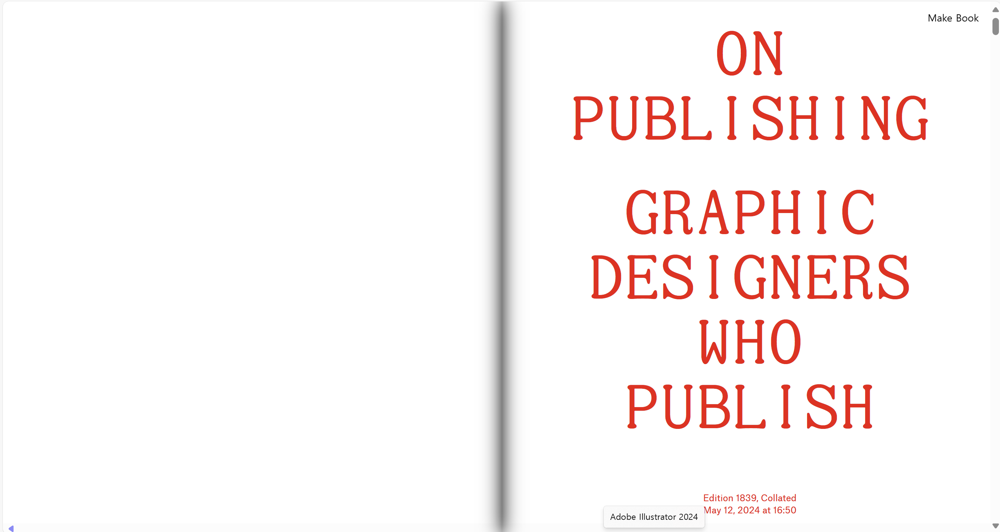
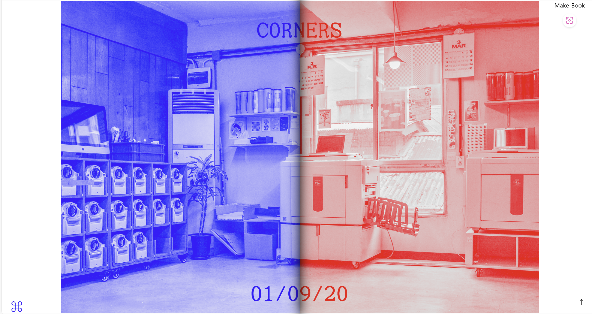
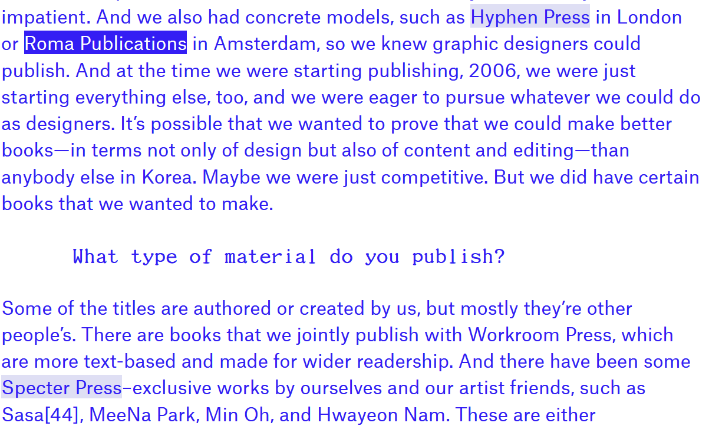
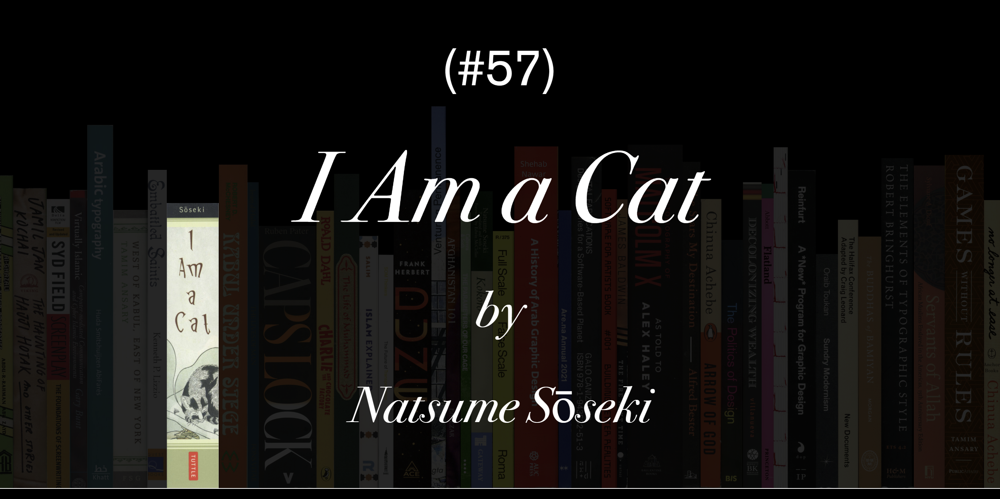
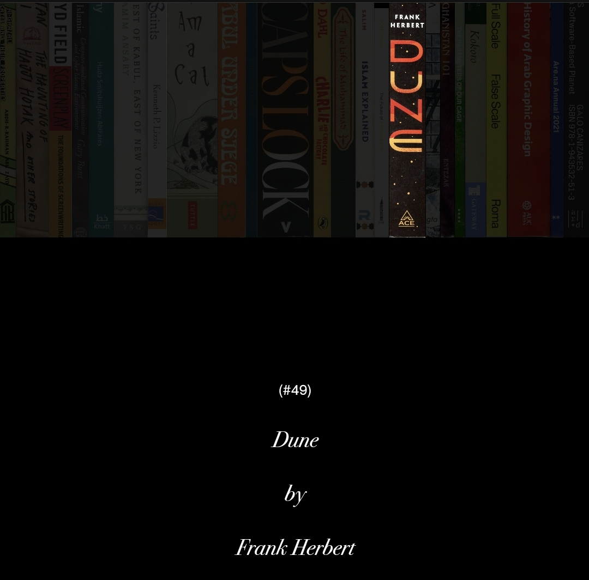
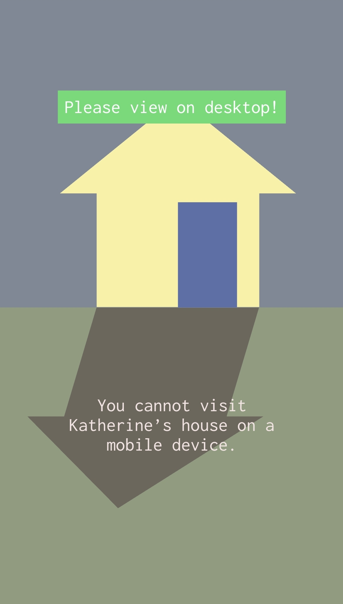
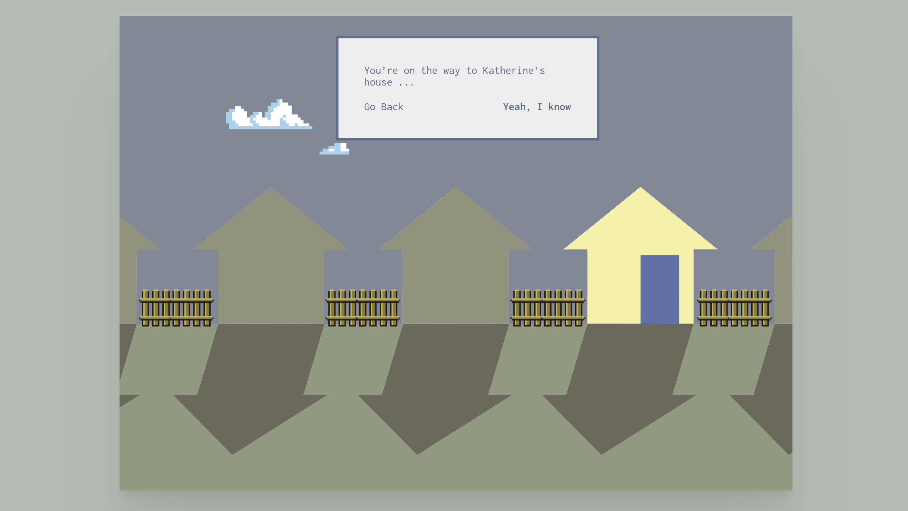
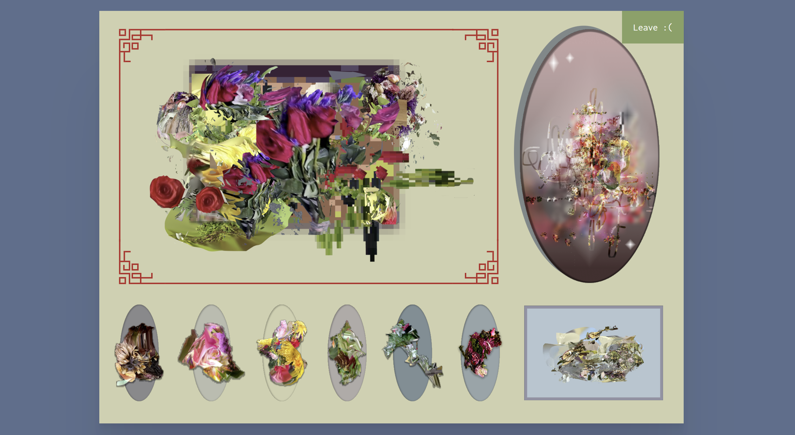

출판에 관하여
각 디자이너들의 이야기를 책 한 권에 담은 느낌의 디자인이 독특하다.
화면을 클릭하면 페이지를 넘기는 연출로 책을 읽는 듯한 요소를 넣은 게 매력적이다.
사이트에 담긴 색은 빨간색, 파란색, 흰색으로만 이루어져 있다.
왼쪽 페이지에는 파란색, 오른쪽 페이지에는 빨간색으로만 보이도록 하였다.
이 점이 화려하거나 꽉 채워진 느낌보단 공간적으로 널널하고 보기 편한 느낌이 든다.
내용 중에 몇몇 단어들을 클릭하면 관련 사이트로 이동되는 점이 사이트를 이용하는 사람이 글을 읽을 때 도움이 될 수 있게 한다.
아쉬운 점은 모바일 화면에선 책 페이지를 넘기는듯한 연출은 없어지고 그냥 장문의 글이 나열되어 있는 게 보기에 피로했다.
해당 사이트로 이동
오마르의 책

책장에 책이 꽂혀있는 연출이 매력적이다.
마우스 커서를 책에 가져다 두면 해당 책의 제목과 작가의 이름이 나온다.
또 커서를 올려둔 책을 제외하곤 전부 어두워지면서 책이 강조된다.
책 이외의 배경 색은 검은색으로 깔고, 글자 색은 흰색으로 함으로써 책들이 준 다채로운 색감에 더 시선이 갈 수 있도록 했다.
모바일 화면에선 아래 검은 공간이 크게 차지하고 있어 데스크톱용으로만 만들어진 사이트 같았다.
하지만 책을 클릭하면 아래 공간에 책 제목과 작가의 이름이 나온다.
만약 데스크톱에서 마우스로 커서를 가져다 대면 책위에 글자가 뜨는 것처럼 모바일 화면에서도 책위에 글자가 나왔다면 이 사이트는 모바일화면을 생각하지 않고 만든 사이트였을 것이다. 아래에 글자가 뜸으로써 모바일 화면에서의 어느 정도 균형은 맞춰진 것이다.
해당 사이트로 이동
도코노마
이 사이트는 모바일화면으로는 이용할 수 없게 되어있다.
모바일로 들어올 경우 데스크톱으로 들어와 달란 문구가 나오고, 클릭을 해도 별다른 특징은 없다.
이 사이트가 특별하게 느껴졌던 건 캐서린의 집에 방문한다는 컨셉으로 사이트가 만들어져서 매력적이었다.
RPG 게임적인 면도 있다. 처음 사이트에 들어가면 캐서린의 집으로 향하는 중이라는 문구가 나온다. 문장 아래에 사이트를 이용하는 사람이 클릭할 수 있는 답변지 두 개를 만들어 둔 점에서 게임 선택 창 같다고 느꼈기 때문이다.
캐서린의 집으로 들어가면 집 내부에 있는 벽을 볼 수 있다. 클릭하게 되면 가까이 볼 수 있다. 캐서린의 꽃으로 보이는데 꽃을 따갈 수 있다. 가져가게 되면 꽃 사진이 자동으로 다운이 된다.
사이트 자체는 심플하게 보이지만 담긴 내용이 풍부하게 느껴진다. 사이트 색감이나 디자인, 컨셉 자체가 약간 기괴한 느낌이 들기도 해서 시선이 갔다.